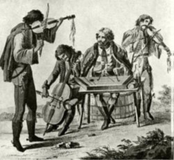
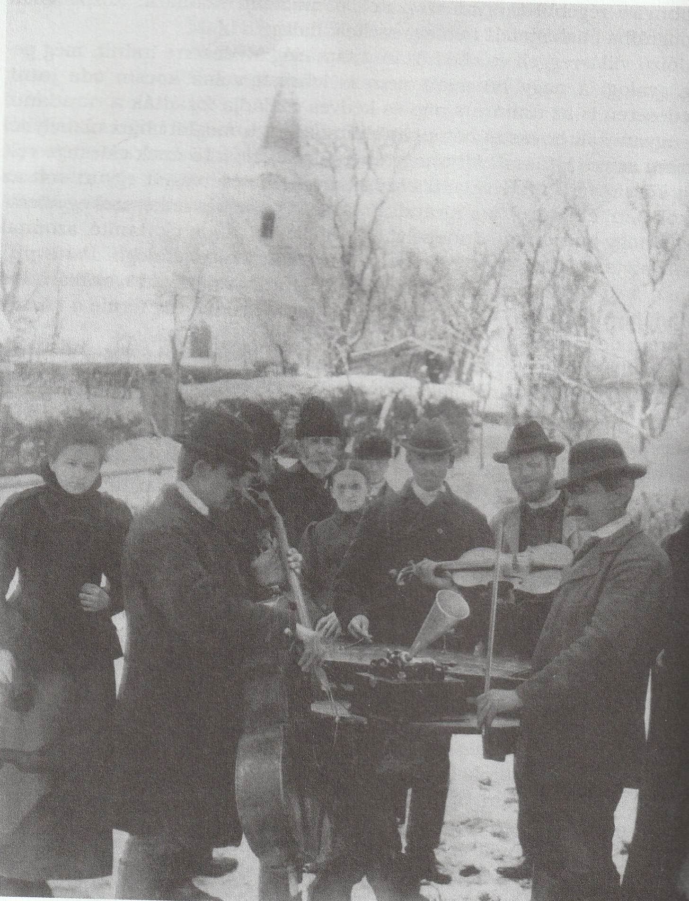
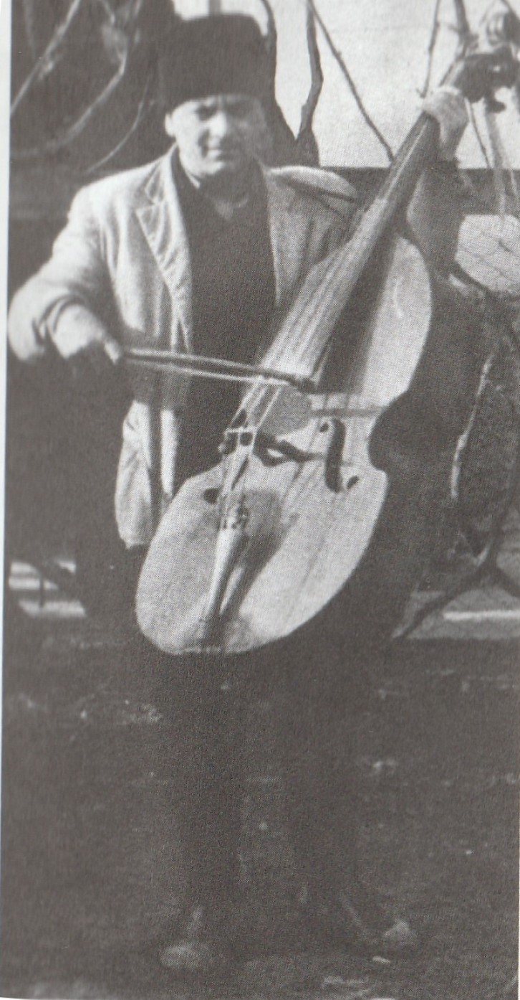
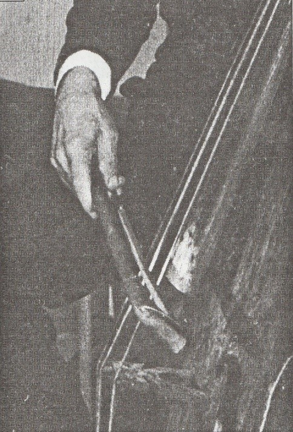
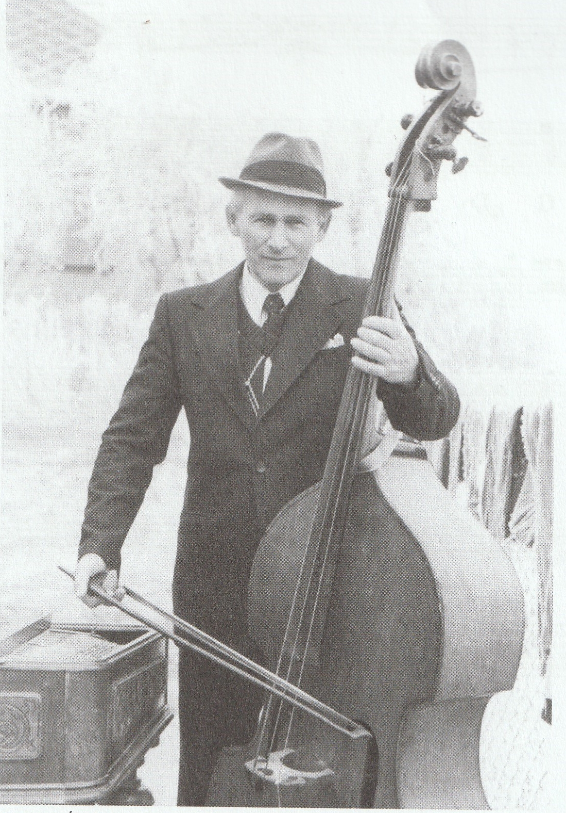

A néphagyományban a vonós bandák elsődleges feladata a táncalkalmak zenei igényeinek kiszolgálása. Tánc és zene nem élhetett egymás nélkül, márpedig a jeles eseményekhez dukál a megfelelő zenei kíséret. Az évszázadok során sokat változott a táncok alá muzsikáló hangszerek, hangszeregyüttesek összeállítása. Általában a magasabb társadalmi rétegek divat hullámait követve honosodtak meg újabb és újabb hangzás igények melyeket a mindenkori zenészeknek kellett kiszolgálni. Azonban az új nem mindig tüntette el a régi szokást. Sok olyan esetről van tudomásunk, melyeknél habár az új irány látszólag uralja a felszínt, a régi stílusok, hangszerek megtalálhatóak, csupán a jó kérdést kell feltenni, megfelelő helyen kutatni. A vonósbandák népszerűségének kezdete a XVIII. századra tehető, és fénykoruk a XIX. századon át a XX. század utolsó évtizedeiig tartott. Ezt követően a technikai fejlődés már a hagyományőrzőbb Erdélyben is elhozta a vonós zenekarok alkonyát, a hagyományos zenei világgal együtt. Játékuk azonban hála a népzene és néptánckutatásnak sok esetben megmaradt a különböző gyűjtéseken, melyek segítségével betekintést nyerhetünk e letűnő világ életébe.
Történeti előzmények
A magyar nép táncos hajlamáról már a középkor folyamán vannak írásos forrásaink. Az 1279. évi budai zsinat egyik rendelkezése például tánc tilalmat vezet be a templomok és temetők környékén. Az ezt követő évszádokból is vannak feljegyzések táncokról melyek elemeiről sajnos nem tudósítanak részletesen. A táncot kísérő zenékről, hangszerekről csupán elképzeléseink lehetnek. A magyar duda népszerűségéről az A 16. századi források már nyilatkoznak. Ekkor még főúri udvarokban is előfordult e hangszer. A 17. században Apor Péter még arról számol be, hogy Apafi Mihály erdélyi fejedelem szeretett dudazenére táncolni.
A duda mellett a hegedű rendelkezik a legnagyobb múlttal a magyar zenei kultúrában. A hegedű, modern formáját az 1550-es évek környékén nyerhette el észak-olasz területen. Tehát amikor a 16-17. századi forrásokban hegedűről olvashatunk, az még nem a mai formában létező hangszert jelöli, mind inkább különböző formájú, házilag készített hangszerek. A hegedű magában, de különböző hangszerkettősökben és együttesekben is mulattathatott. A zajosabb táncalkalmakkor az egy szál hegedű nem felelt meg hangerőben, ezért más hangszert is használtak mellette, melyek egyik fő feladata a ritmuskíséret. „Hangszeres tánchoz a 16. század első felében előkelő európai környezetben is elég volt egy szál furulya, ha azt dob kísérte.”
Ilyen hangszerkettős lehet a csíki székelyeknél és a gyimesi csángoknál a hegedű-gardon kettős, mely a zurna - dob kettősre emlékeztet. Hasonló kettős a máramarosi románoknál a zongură (gitár)-hegedű, illetve a rezijai szlovéneknél a hegedű – bunkula (3 húros cselló).
A 18. századi barokk vonós kamarazenekarok mintájára jöttek létre az első cigányzenekarok. A vonós hangszerekből álló együttes melyben helyet kap a hegedű mellett a kontra és a bőgő (kicsi vagy nagy), valamint cimbalom, nagyjából 1800 tájékán állandósul. Ez alapfeltétele volt a kor divatos zenéjének korszerű zenei kísérettel történő megszólalásának. Az ezt megelőző időszakból is léteznek leírások.
1737 táján Szepes megyében, a Csáky grófok birtokában lévő Ilyésfalván élt egy Barna Mihály nevű cigány, olyan kiváló mestere a hegedűnek, hogy őt a nemes lelkű gróf Csáky Imre bíboros udvari zenészként alkalmazta. Kórusa rendszerint csak négy személyből állt: ő hegedűn játszott, volt mellette egy kontrás, egy hárfás és egy kisbőgős. Az utóbbi három azonban nem volt született cigány, csak Barna Mihály egyedül.
Az ebben az időben élő és zenélő híres női cigányprímás zenekarában hárfa helyett cimbalom volt. Férje bőgős volt, annak testvérei pedig kontrás és cimbalmos. Biharinak már 5 tagból állt a banda. A legnagyobb együttes ebből a korból, amiről tudni lehet, 10 tagú volt (2 gordonos, 2 cimbalmos, 6 hegedűs) 1792-ben, Budán. Farkas Józsi bandája az 1830-as évek végén 6-7 tagú volt (3 hegedű (prím, másod, és kontra), egy gordonka (bőgő szerepében), 1 cimbalom, 1 klarinét).
1817-ben a Hasznos mulatságok 7. száma számol be röviden cigányzenekar muzsikájának hatásáról
A muzsika, ha mégoly kezdetleges is, a primitív emberre erősen hat. Tapasztalhatjuk ezt a mai finomult világban is s mennél hátrább maradt valaki a tsinosodásban, s a jó ízlésben, annál lármásabb Musikában gyönyörködik. Három-négy Czigány Hegedűs egy brugóval micsoda vigasságra s tombolásra lázaszt némely házi gyülekezetet!!
Sajnos az egyes kísérő hangszerek játékmódjáról nem sok mindent tudunk meg az akkori sajtóból. A bőgő ez idő tájt még főleg kisméretű lehetett: vagy házi készítésű hangszert használtak, vagy gordonkát. Ez onnan is látszik, hogy a tudósítások szerint az 1850-es évek elején a nagybőgő a kisbőgő helyett még ritkaságnak számított. A század végére azonban egyre több helyen vette át a kisebb bőgők helyét.

Cigányzenekar a 18-19. század fordulóján (Országos Széchenyi Könyvtár)
A falusi cigányzenekaroknál is többé - kevésbé ilyen összetételű bandákkal találkozunk, jól lehet, nagyobb létszámú formációk csak ritkán voltak, általában 3-4 tagot számláló együttesek jöttek létre.
A Lajtha László által, 1941-ben a Magyar Rádió stúdiójában felvett széki zenekarban kisbőgőt halhatunk. A prímás Ferenczi Márton szerint Széken régebben nem volt bőgő, csupán hegedűre és kontrára mulattak. Erdélyben a bőgő elterjedése az I. világháború utánra tehető. Ez idő tájt házilag készített kisebb méretű (feles vagy negyedes) bőgők, illetve gyári gordonkák különböző hangolásokban lesznek részei a megalakuló zenekaroknak. A kisebb méretű basszus hangszerek elterjedését a nagybőgővel szemben segíthette mérete súlya, kompaktsága, mobilitása. A basszus hangszer igénye még nem volt jelentős az első világháború előtt. Kodály is arról tudósít, hogy a cimbalom, a klarinét, és a kis- vagy nagybőgő csak később váltak nélkülözhetetlenné a kisebb falvakban. A képet némileg árnyalja, hogy Vikár Béla 1900 márciusában a székelyföldi Medeséren történ gyűjtéséről készült fotón kisbőgő látható.

Balogh János és zenekara Medeséren (1900. március 14.) (Néprajzi múzeum)
A nagy háborút követően, a széki példából kiindulva, mindössze 20 év alatt képes volt mélyen, és véglegesen beépülni a néphagyományba. A 20. század második felében Erdély majdnem minden táján nagybőgőt használtak, ám nem volt általános az összes területen. A legkésőbbi gyűjtésekig volt rá példa, hogy egyes területeken jobban szerették a kisbőgőt, illetve tánctértől függően választottak méretet. Erdélytől nyugatra a nyelvterületen a nagybőgő már valószínűleg előbb átvette sok helyen a kisbőgő funkcióját. Lajtha 1929-ben, a Borsod megyei Cserépváralján olyan bandát talált, melynek tagjai magyar parasztok voltak, nem cigányok. A zenekarról készült fotón nagybőgő látható. Azon analógián elindulva, mely szerint a parasztbandák a cigányzenekarok mintájára alakultak, arra következtethetünk, hogy a nagybőgő már korábban megvetette lábát a Partiumtól nyugatra.
A 20. században kezdődő gépi adatrögzítések idejére a bőgők már a hagyomány részét képezték. A fonográfos felvételeken szinte egyáltalán nem hallatszik a bőgő, így a 40-es évek előtti időszakból nincs adatunk, hogyan is játszottak a basszushangszereken. Csupán a gyűjtéseken készült fotókon láthatjuk őket, tartásukat, a vonókat. A későbbiekben a jobb minőségű rögzítő készülékeknek köszönhetően már többet megtudhatunk ezen hangszerek játékmódjaikról.
A „népi bőgő”
A népzenében alkalmazott bőgő szó több hangszert is jelenthetett. Így nevezték mind a gyárilag készített nagybőgőt, mind a házilag barkácsolt kisebb méretű utánzatokat, de ezzel a névvel illeték csellót is.

Ádám Sándor „Icsán Sanyi” széki bőgős, házilag készített kisgordonnal.
A néphagyományban használt bőgők temperálása sokféle volt. Leggyakrabban a kvart távolságra hangolással hallhatunk, de cselló esetén kvint hangolás is előfordult. Találkozhatunk a klasszikus zenében is használt 4 húros nagybőgőkkel is, de gyakoribb volt az a változat, amelyre három, állatbélből (leggyakrabban juh) készült húrt szereltek kontra E húr nélkül. E mellett találkozhatunk kettő húrral felszerelt hangszerekkel is, melynél csak az egyik húron játszottak, a másikat sokesetben nem is hangolták fel rendesen, azért volt felszerelve, hogy helyén tartsa a húrtartót, illetve póthúr gyanánt a másik elszakadásának esetén. E húron ritkán játszanak. A gyári húrtartó lábak íve általában enyhébb, ezért gyakorta cserélik le házilag faragott nagyobb ívű lábra. A nép kezén legtöbbször a német formájú hangszerek domináltak, a házi készítésű hangszereket is ilyen formájúra faragták.
Régebben házilag készült vonót használtak. Ezek rövidebbek, tömörebbek, súlyosabbak voltak, formájuk inkább a klasszikus zenében használt franciakápás vonókra emlékeztet. A vonót a francia fogással rokon paraszti fogással markolja. A kápát úgy alakítják ki, hogy a játékos markát kitöltse.

Népi vonó fogása (Moldován György „Ilka Gyuri”, Szék)
Egyes esetekben lehet látni német fogásra emlékeztető tartást is. A nagybőgők elterjedésével sok helyen a népi vonókat is felváltotta a klasszikus németkápás vonó. A klasszikus zenében a német fogásmódnak több variációja van. A falusi bőgősök vonófogása leginkább a Ludwig Streicher által kifejlesztett változatra hasonlít, de gyakorta módosul annak érdekében, hogy minél nagyobb nyomás kerüljön a húrra.

Farkas Árpád kisari nagybőgős vonófogása
Mit játszik a bőgő a népzenében?
A bőgősök legalapvetőbb feladata a táncok ritmuskísérete. Erdély valamennyi területén félig-meddig, vagy teljesen ütőshangszerként kezelték, különösen gyorsabb tempójú táncoknál. Egy 19-20.sz. fordulója környékén készült leírás szerint a székely csürdöngölő tánc „ kísérete induló ritmusú melyet a nagybőgő vonóval verése emel ki” . A vonó pálcájával a húrokat ütik, míg a másik kézzel a kávát verik. Gyakran tartottak erre a célra külön verőt is a zenészek. Gyors esztamos táncoknál, bizonyos területeken, csípett, a fogólapra vissza csattanó húrós pengetéssel szólaltatják meg. Gyakorta vonóval „dobol” hangszerén. Ilyenkor egy hangon marad, harmóniáktól független. „A tánczenében, a mindennél előbbre való ritmuskíséret mellett, a hangzás teltsége is fontos.”
A bőgős harmonizáló együttesben is megteheti, hogy csak a ritmusra figyel. A kőrispataki együttes bőgőséről írja Lajtha "Különösen, ha tánc alá játszik a banda, hagyja abba a harmónia alaphangjának meghúzását és elkezdi a basszust különböző ritmusokban ismételni; mint egy dobol, ritmus figurát játszik, elszabadul a dűvő vagy esztam kíséretformulától."
A bőgős számára másodlagosak a hangok, amelyeket játszik. Gyakorta hallhatunk olyan felvételt, melyen a bőgős csak nagyon ritkán talál akár a dallam, akár a harmóniák valamely hangjával. Ügyesebb, jobb fülű bőgős esetén, attól függően, hogy az adott területen hogyan kísérnek, lehet dallamkövető, illetve játszhat funkciós basszusokat. Az első kategória egyik legkézenfekvőbb változata, amikor a dallam pillérhangjait játsza a tánc alapritmusát követve. Ennek egyik példája a felsősófalvi bőgős játéka, mely során amely dallamokat ismeri, azok esetén egyszerű vázukat játsza, míg a többi esetén inkább dobol a hangszeren. Másik változata amikor a kontrával együtt követi a dallam hangjait. A kontra rendszerint ilyenkor csak dúr akkordokat fog mixtúra szerűen. Azonban ezen hangok nem mindig azonosak többek közt brácsa - bőgő viszonylatban sem. Gyakorta nem ugyanazon hangokat értelmezik főhangnak, vagy az egyik késik a hegedűhöz képest, de olyan is akad, hogy előbb hozza még a prímásnál is. Ez a kíséretmód a 20. század második felére már csak Erdélyben maradt fent, igaz ott még a mai napig hallható egyes falvak zenekarainál.
„A prímás ő a kottáját játszódja, a brácsos erősíti, az meg erősíti a hangsúlyt s a nagybőgős… gordonozza az ujjait, hogy még jobban felerősítse a kottát… úgyhogy a prímásnak az a valamije [dallama] az úgy elvesződik, hogy… De a nagybőgőse az erősítsen…!”
„Nálunk minden hangsúly, minden ritmus, minden kotta a bőgős. A bőgős viszi. A zaj, a lárma úgy elviszi a prímást, hogy a bőgő, az vezet, úgyhogy a bőgős, hanem anélkül meg se tudnánk lenni. Szerettem ráfigyelni a taktusra, bőgőre én is. … A prímás és a gardon, aki viszi, találkozik. …Találkozzék a legényesben, találkozzék a kotta a gardonnal és a prímással.”
(Jaskó István „Pitti” györgyfalvi táncos, 1984)
Funkciós kíséret a városi cigányzenekarok hatására terjedt el nagyobb mértékben. Partiumtól nyugatra már nem hallunk olyan gyűjtést melyen nem így harmonizáltak volna. Helyszínen improvizálják a zenészek, nem betanult sémákra építkeznek. Ennek megfelelően olyan megoldások keletkeznek, melyek az ilyen helyzetekben alkalmazhatók. Ilyen feltételek mellett már nem a klasszikus összhangzattan esztétikai szabályait követik. Gyakori például a vezetőhang kettőzés, mely során a bőgő a domináns akkord alapja után, vagy helyett, a tercére ugrik fel, ezzel előkészítve a következő akkord alapját. A magyarországi cigányzenészek valószínűleg a 18. század vége táján kezdtek el nagyobb számban az európai harmonizálás irányába érdeklődni.
Bőgő esetén ismerni kell, hogy a helyi hagyomány szerint mennyi húrt használnak, ha hiányzik akkor az azért, mert nem is volt szükséges, vagy csupán nem állt módjukban még pótolni. A bőgősök általában mellőzik a nagyobb hangközugrásokat. Gyakorta maradnak az előző hangon, vagy találomra fognak be mást még akkor is, ha az nem egyezik sem a kontra sem a hegedű hangjaival. Megtévesztő lehet, ha az akkord valamely hangjával egyezik, vagy összhangzattanilag értelmezhető hang jön ki. Ilyenkor célszerű többszöri eljátszások után értékelni a kapott eredményt. A legkisebb mozgás elve érvényesül a bőgőjátékban, természetesen a klasszikus gyakorlatnál tágabban értelmezve. Az üreshúrt gyakorta kerülik a kisebb intenzitás miatt. A szekundlépésnél, ha üres húr következne, akkor gyakorta megtartják inkább az előző hangot, hogy ne kelljen se üres húron játszani, se szeptim távolságot ugrani. Leggyakrabban 3-4 laposan fektetett ujjal, markolva fogják a hangokat, mely nehézkessé teszi a könnyed mozgást a fogólapon. E mellett az álló játékmód és az erőteljes vonózást megtámasztva, a balkéz hangszertartó funkciót is ellát, még jobban limitálva annak szabad mozgását.
Kisbőgő esetén, melynek a hangereje is kisebb, gyakorta keres ki a játékos két erőteljesebb hangot, melyet váltogat több-kevesebb szabályossággal, függetlenül a kontra akkordjaitól, csupán a ritmusra ügyelve.
A hangolást nem a kontra vagy a hegedű egy- egy hangja határozza, hanem inkább a húr feszessége és a hangok erőteljessége. Az üres húr így gyakran nem is illeszkedik a hangrendszerbe, attól negyed, vagy akár fél hanggal magasabb. Ennek ellenére megtörténhet, hogy e magasabb hangot annak eredetije helyett szólaltatják meg, de a brácsán az eredeti magaságban szólal meg.
A bőgő és a háromhúros kontra viszonylatában az előbbi mozgékonyabb. Régiesebb stílus esetén, míg a brácsa dúrakkord-mixtúrás kíséretet játszik, addig a bőgő bizonyos helyeken a dallam egy-egy részletét játsza, illetve a funkciós kíséret esetén tercet kettőz.
A játéktechnikát befolyásoló elvárások
A hangszeres zenét meghatározzák a hangszerben rejlő lehetőségek, adottságok, a közösség hagyományos zenekultúrája és szokásai, másrészt maga az ember, mint társadalmilag meghatározott személy a maga szubjektív képességeivel, készségeivel, tehetségével.
A népi hangszeres zene viszonylag zárt kereteket határoz meg az individum zenei intuicióinak megvalósítására. Lehetőségeit a hagyomány határozza meg. Ezek megjelennek a játékstílusban és a repertoárban is.
A bőgősnek többirányú, esetenként ellentmondó elvárásoknak kell megfelelni
zenekari hatékonyság segítése, a zenei folyamat folytonosságának és stabilitásának biztosítása, a tempóváltások követése:
Erős hangzás
egyenletes ritmus, széles dinamikájú játék
állóképesség
alkalmazkodás a táncos tempóválasztási elvárásaihoz
bármilyen ingadozás ellenére egyenletes lüktetés tartása
az esztétikai és melodikai igények kiszolgálása
dallam egyszerű, de pontos kijátszása egyes esetekben
A hosszan tartó mulatságok, melyek több napig is tarthattak, kimerítették a zenészeket. Sokat kellett muzsikálni, kevés pihenővel. Hogy bírják az iramot, gyakran játék közben találtak ki olyan módszereket, melyekkel lazíthatják izmaikat, energiát takaríthatnak meg. Ez mind hozzáad a játékstílus kialakulásához.
Minden zenészre jellemző, hogy a saját ideáljára alakítja hangszerét.